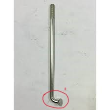
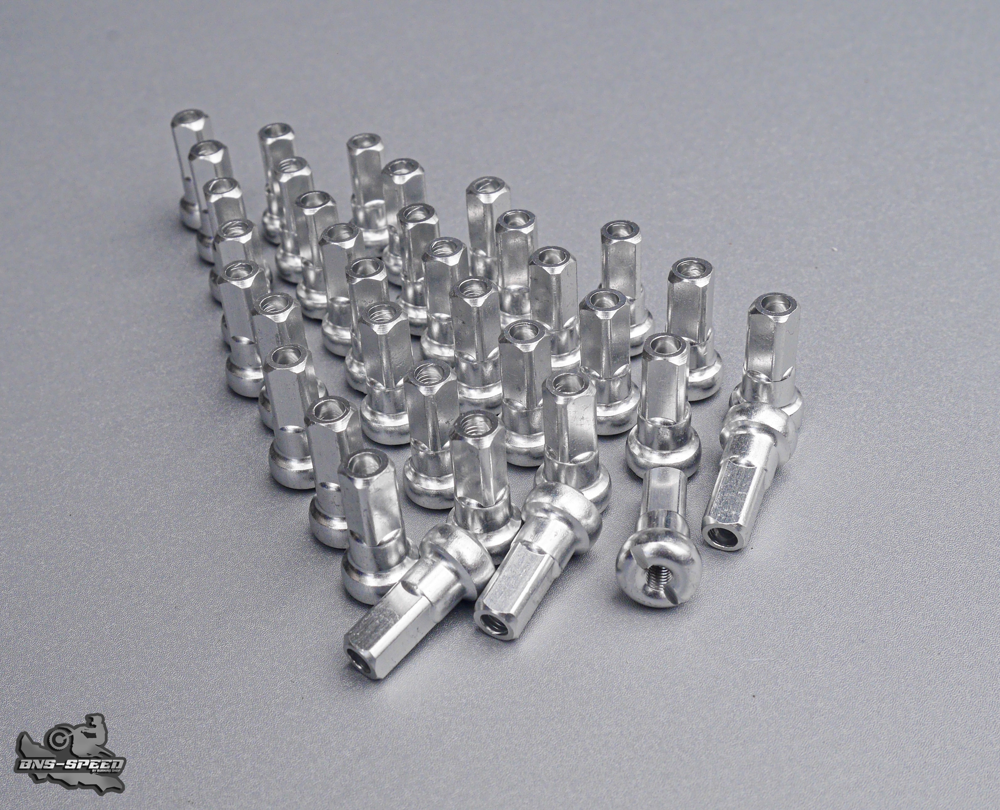
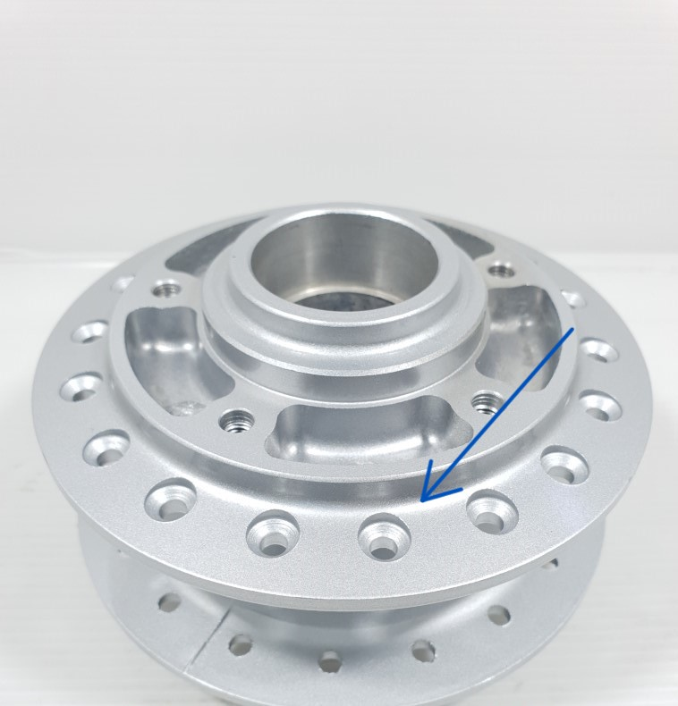
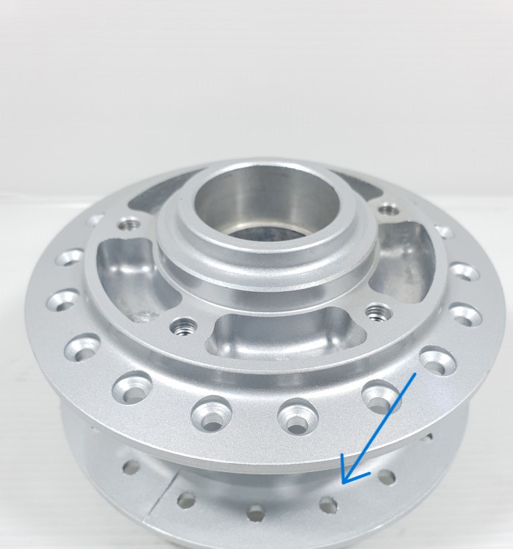
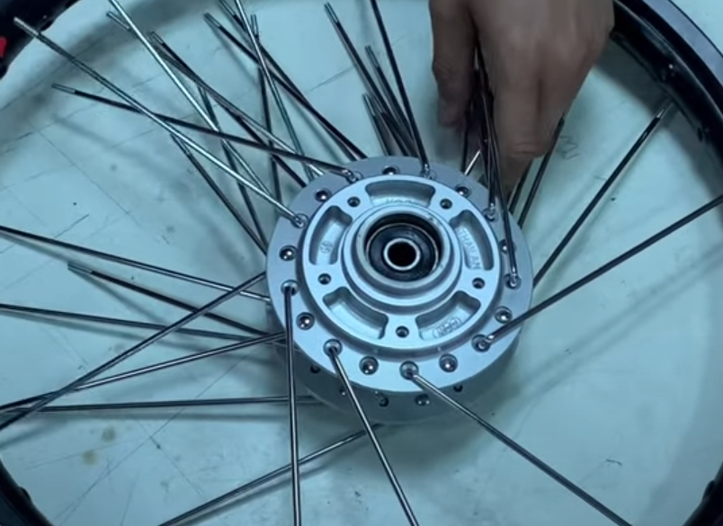
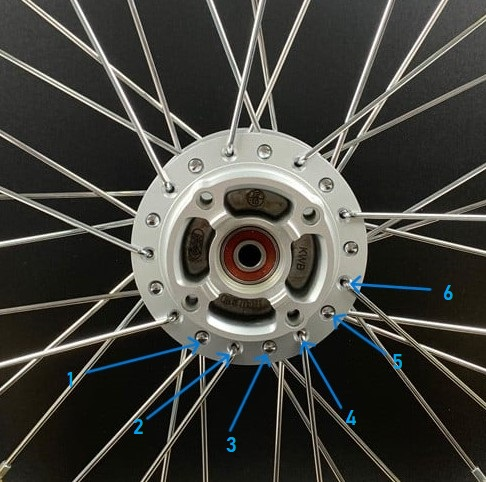
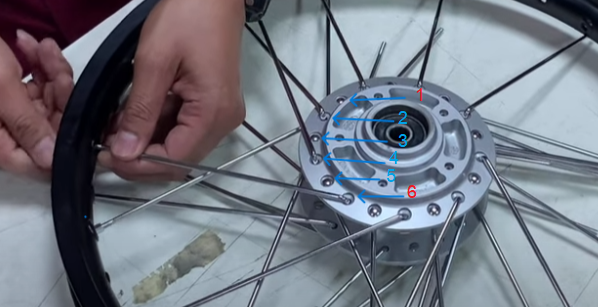
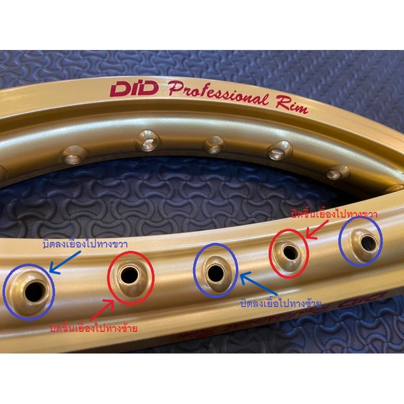
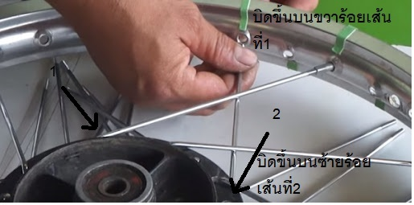

ผู้เขียนจะแนะนำให้รู้จะวัสดุที่ผู้ซ่อมต้องเจอในซี่ลวดล้อ1กล่องโดยผู้เขียนจะใช้ภาษาแบบช่างบ้านๆเลย
1.หัวงอน้อยสังเกตุโดยหัวซี่ลวดจะงอเข้าหาตัวน้อย
2.ซี่ลวดหัวงอมาก สังเกตุโดยหัวซี่ลวดจะงอเข้าหาตัวมาก
3.หมุดซี่ลวด
 
1.ให้ผู้สานทำการแยกหัวงอมากงอน้อยออกจากกันให้เรียบร้อย
2.จับดุมหันเบ้าลูกปืนเข้าหาตัวเอง
ให้ผู้สานทำการนำหัวซี่ลวดงอน้อย เสียบที่รูตามที่ผู้เขียนแนบภาพไว้โดยเริ่มจากรูไหนก็ได้ ร้อยรูเว้นรูไปเรื่อยๆจนครบรอบเสร็จเเล้วให้ทำการผลิกฝั่งเเล้วทำเหมือนเดิม
3. ให้ผู้สานทำการนำซี่ลวดงอมากไล่เสียบรูที่เหลือตามภาพจนครบรอบ 
เสร็จเเล้วผู้สานจะได้ดุมที่ร้อยเเล้วตามภาพ เตรียมตัวทำขั้นตอนต่อไป 
ให้ผู้สาน ทำการวางดุมไว้กลางวงล้อ เเล้วจับซี่ลวดมาตามจำนวนที่จะสาน สาน2จับ2สาน4จับ4สาน6จับ6 โดยการนับจากหัวซี่ที่ดุมล้อ 
ให้ผู้สานนำเส้นที่1และ6มาไขว้กัน [กรณีสาน4ให้ใช้เส้นที่4 2ให้ใช้เส้นที่2] 
ให้ผู้สานทำการสังเกตุที่วงล้อ รูจะต้องหันเข้าหาซี่ลวดได้ตรงตำเเหน่งตลอด 
ให้ผู้สานร้อยเข้ากับวงล้อ โดยจะนับรูที่วงล้อ ร้อยรูเว้นรู ไม่นับรูทูบลมให้เราทำเป็นไม่เห็นมันนับเเค่รูซี่ลวด รูวงล้อจะต้องหันเข้าหาตำแหน่งหัวซี่ลวดตลอด 
คู่ที่2ให้ผู้สานไล่ไปทางซ้ายหรือขวาตามถนัด ทำเเบบเดิมร้อยรูเว้นรูที่วงล้อ จนครบทุกเส้น เเละทำการผลิกฝั่งร้อยอีกฝั่งที่เหลือ เป็นอันเสร็จ